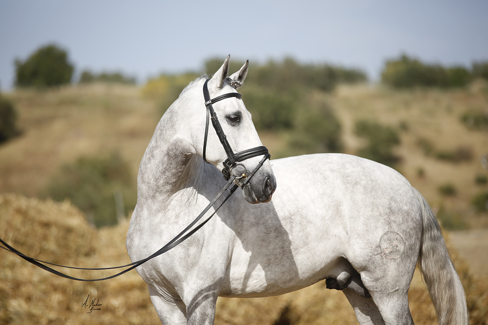
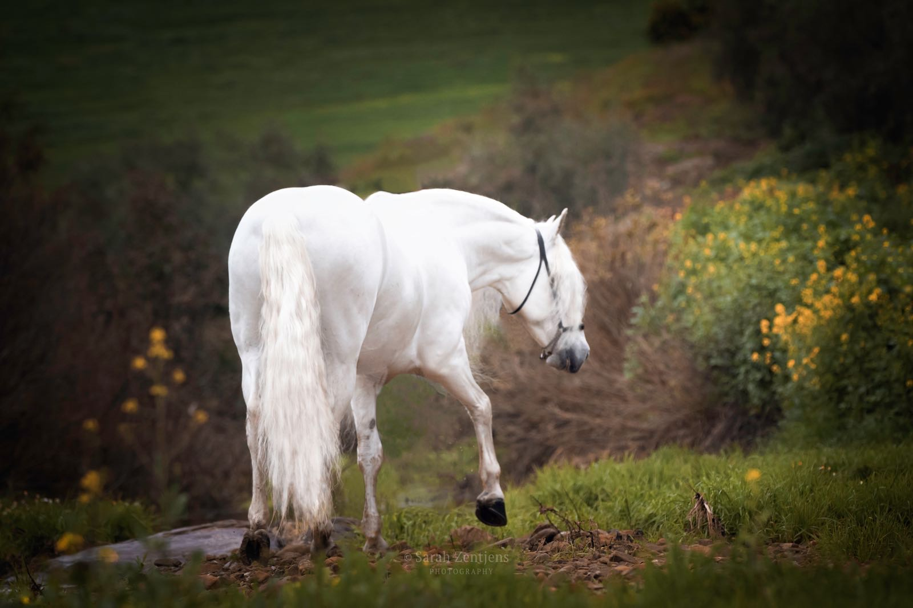
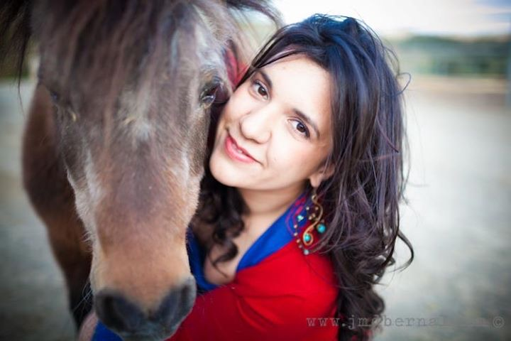
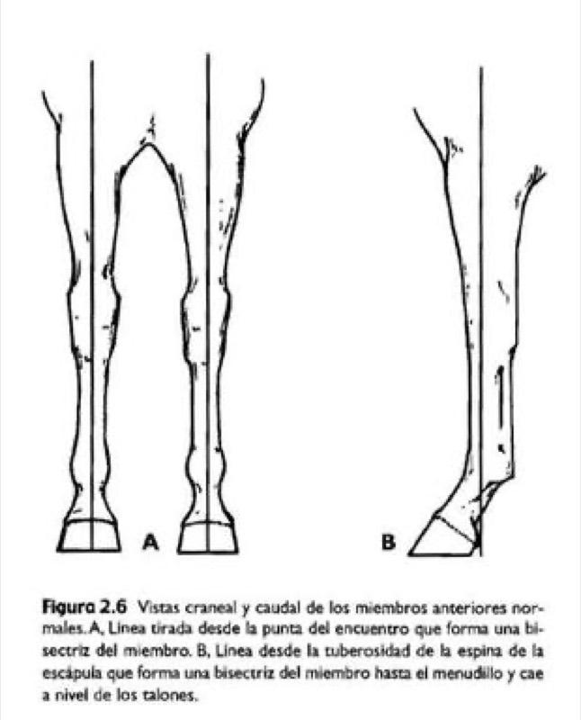
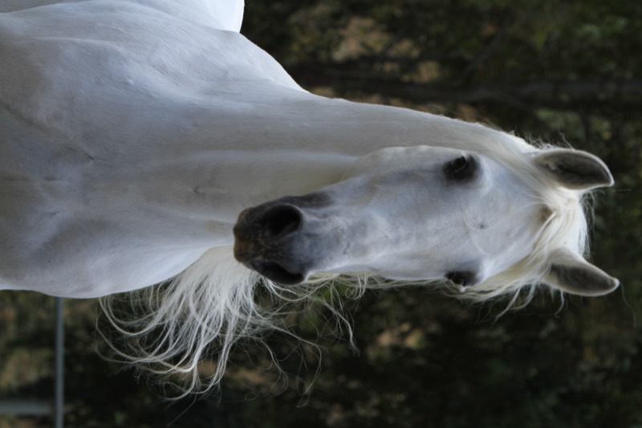
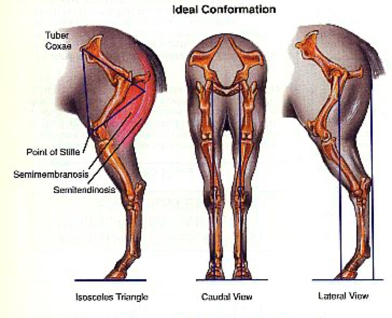

Los aplomos del caballo: miembros anteriores
Qué son los aplomos y cómo detectar sus defectos, con el caballo parado y en movimiento.
Clínica ambulante equina
Hemos hecho de nuestra pasión, los caballos, nuestra profesión. Vamos a su cuadra para que su caballo se mantenga sano, atlético y feliz.

Servicios
Atendemos en su cuadra o finca. Pulse en cada servicio para ver el detalle.
Problemas digestivos, respiratorios, dermatológicos y de medicina interna.
La base de la veterinaria equina es la medicina general. Estamos disponibles para cualquier consulta y sobre todo las relacionadas con la medicina interna. Ya sean problemas digestivos, respiratorios, dermatológicos o de cualquier otro tipo, no dude en ponerse en contacto con nosotros para concertar una cita y realizar un estudio detallado de cualquier problema que ataña a su caballo.
Diagnóstico de cojeras y de problemas de rendimiento.
Cada día la exigencia de rendimiento de nuestros caballos es más alta, y deben contar con la ayuda de un veterinario que les ayude a mostrar su máximo potencial. Ofrecemos servicios de diagnóstico de cojeras, ecografía, radiología digital y diagnóstico de problemas de rendimiento.
Ginecología, andrología, obstetricia, inseminación y transferencia embrionaria.
Ofertamos amplios servicios de ginecología, andrología y obstetricia. Además de diagnóstico y control de gestación, diagnóstico de problemas ginecológicos e inseminación artificial, hemos incorporado la extracción, valoración, refrigeración y comercialización de semen refrigerado y el trasplante embrionario.
Cuidado dental preventivo para resolver los problemas a tiempo.
Incluso si su caballo está sano, el cuidado dental de los équidos es esencial. Si se detectan a tiempo, hay problemas que se pueden resolver de manera rápida y económica. Por eso en Vetequus estamos comprometidos con el cuidado preventivo.
Radiología digital y ecografía en la propia cuadra.
La radiología digital y la ecografía nos permiten abordar de manera completa diversas patologías para su diagnóstico y tratamiento: diagnóstico de cojeras, control y seguimiento de patologías del aparato locomotor, evaluación de infosuras/laminitis, cuidados ortopédicos, evaluación reproductiva…
Valoración completa en estático y en movimiento antes de comprar.
El examen precompra permite conocer la salud actual del caballo para su valoración por parte de vendedor y comprador. Incluye pruebas en estático (aparato digestivo, respiratorio, cutáneo, oftalmológico, odontológico, palpación y valoración de miembros, dorso y cuello) y en movimiento (pruebas de flexión, valoración de cojeras, pruebas de esfuerzo), apoyadas por reconocimiento radiológico, pruebas de laboratorio ante cualquier sospecha y exámenes reproductivos en animales destinados a la cría.
Vacunación, desparasitación, nutrición y manejo.
Asesoramiento para la prevención de todo tipo de enfermedades. Programas de vacunación y desparasitación frente a las enfermedades infecciosas más frecuentes (influenza, tétanos, fiebre del Nilo Occidental…). Medidas nutricionales, odontológicas y de manejo para prevenir problemas digestivos (cólicos), respiratorios y alérgicos. La prevención es la mejor herramienta para ahorrar dinero y salvaguardar la salud de nuestros animales.
Microchip, pasaporte/DIE, cambios de titularidad y transporte.
Elaboración de reseñas, implantación de microchip y gestión de los trámites del pasaporte/DIE, cambios de propietario, documentación para el transporte de équidos y libros de explotación. Tenemos la mejor relación con las administraciones y las asociaciones de ganaderos para agilizar todas sus gestiones.

Horario de servicio

Sobre mí
Nací en una familia que se ha dedicado con pasión a la cría de caballos, lo que me dio acceso a los conocimientos de cría, mejora y selección de ganado equino. En 2006 decidí comenzar a trabajar de forma autónoma como clínica ambulante equina, y desde entonces ofrezco mis servicios sin descuidar la formación continua.
Durante mis estudios fui alumna interna de Etnología, Etología y Radiología, y del Hospital Clínico Veterinario de la Universidad de Córdoba. En vacaciones hice prácticas en hospitales europeos como el Hospital Equinia (Noorderwijk, Bélgica).
Después realicé el internado en el Centro Policlínico Veterinario San Vicente del Raspeig bajo la supervisión del Dr. Manuel Alejandro Rodríguez, donde completé mi formación en reproducción equina, clínica ambulante, cuidados intensivos y cirugía. Más tarde realicé estancias en hospitales de referencia como el Hospital Clínico Veterinario de la Universidad Autónoma de Barcelona, el Hospital De Morette (Bélgica), el Animal Health Trust (Reino Unido) y el Three Counties Equine Hospital (Reino Unido).
Siempre con ilusión, cariño y ganas de seguir aprendiendo.
Blog

Qué son los aplomos y cómo detectar sus defectos, con el caballo parado y en movimiento.

Cómo los genes Grey, Extension, Agouti y Crema determinan la capa, y cómo predecir la de un potro.

Cerrado de corvejones, plantado, remetido: cómo evaluar los posteriores desde atrás y de perfil.
Contacto
Para urgencias, llame o escriba por WhatsApp.